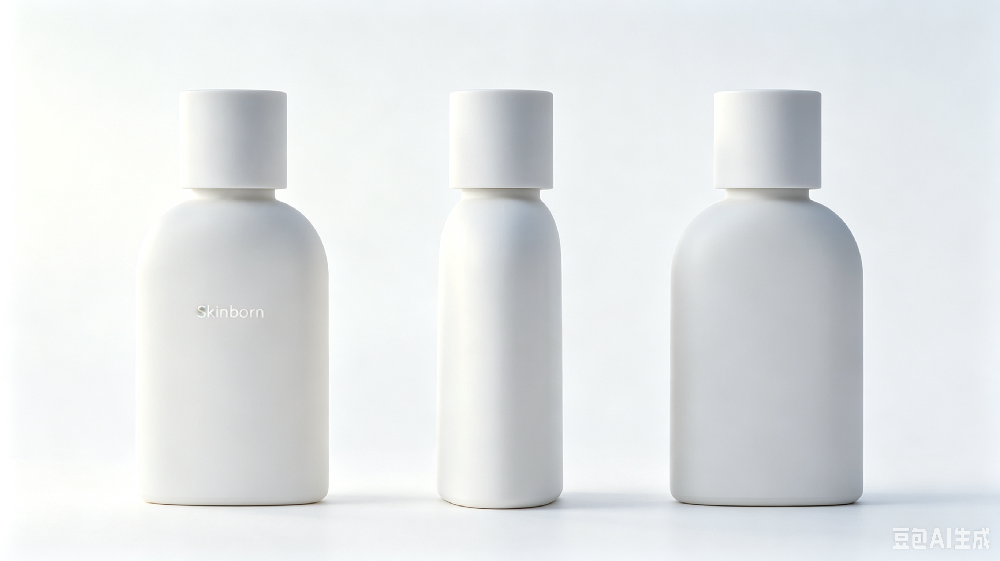

Page 01
项目核心摘要
FUFUSCENT 肤浮 · 呼吸感伪体香 —— 国内首个主打「肤浮式伪体香」的轻感香氛品牌。我们卖的不是香水，是少女肌肤在不同状态下，随呼吸自然透出的原生体香。
| 维度 | 结论 |
|---|
| 赛道选择 | 切入 200–300 元「肤浮式伪体香」垂直赛道，以「肌肤一日三态」的细腻叙事区别于市面同质化伪体香产品。 |
| 品牌定位 | 品类占位型。心智占位：像皮肤呼吸一样，自然浮出来的淡香。英文名 FUFUSCENT（FUFU = 肌肤轻呼吸的软感节奏 + SCENT = 肌理透出的原生香气）。中文「肤浮」：香生于肤，轻浮于表。 |
| 核心差异点 | 独创「肤浮式」散香：香气轻浮于肌肤表层，30cm 贴身清润不齁，1m 外悠悠可闻；「肌肤一日三态」产品体系还原清晨、午后、入夜三个时刻的原生肤香；无边界伪体香体验：盲测下多数人无法分辨是香水还是原生体香。 |
| 核心壁垒 | 心智壁垒：率先定义「肤浮式伪体香」体感标准，以「肌肤一日三香」建立差异化品类认知。 |
| 首发产品 | 三款淡香水 EDT，共享统一「肤浮式」散香基底。对应少女肌肤一日三态：入夜沐浴后 · 午后林间 · 清晨醒来。正装 200–300 元，试香装 9.9 元。 |
| 目标用户 | 20–26 岁一二线城市精致女性。购买动机：自我愉悦 ＞ 追求无负担的社交香气 ＞ 异性好感。 |
| 冷启动 | 小红书为核心阵地。核心传播主线：「肤浮式伪体香 · 少女的一日三香」。内容比例：70% 场景种草 + 30% 品牌心智。 |
| 启动预算 | <10 万。调香打样 + 首批大货优先，包材占比控制在 15% 以内。 |
| 创始人优势 | 小红书香水博主（~1 万粉丝），内容能力极强（周更 3 篇零成本），供应链通路（朋友品牌→工厂）。 |
品牌底层定位 · 肌肤的一日三香
品牌故事
FUFUSCENT 肤浮认为，真正的伪体香从来不是复刻某一种香精味道，而是还原少女肌肤在不同状态下，随呼吸自然透出的原生气息。
它是清晨刚睡醒时，带着被窝温度的软嫩肤香；是午后跑过林间草地，沾了草木与果香的鲜活肤香；是入夜沐浴后，洁净清透的冷润肤香。没有浓烈的喷洒感，没有刻意的香精味，所有香气都从肌理里自然浮出来，像你天生就该有的味道。
我们以「肌肤的一日状态」为灵感，打造三款无边界轻香，还原少女最本真的皮肤气息 —— 你闻到的不是香水，是她皮肤在呼吸。
FUFUSCENT = FUFU（肌肤轻呼吸的软感节奏）+ SCENT（肌理透出的原生香气） | 中文「肤浮」：香生于肤，轻浮于表
| 要素 | 确认内容 |
|---|
| 品类定位 | 肤浮式轻感伪体香 |
| 心智占位 | "像皮肤呼吸一样，自然浮出来的淡香" |
| 品牌内核 | 香生肌理，轻浮于肤 |
| 品牌级 Slogan | "香生肌理，轻浮于肤。" |
| 产品级 Slogan | "像皮肤呼吸一样，自然透出淡香。" |
| 品牌原型 | 照顾者 Caregiver——关怀、守护、不抢戏 |
| 使命 | "让每一个女生——喷香这件事，不需要想。" |
| 价值观 | ① 她的感受，不是他的偏好 ② 自信是被提醒的，不是被创造的 |
| 视觉方向 | 清冷水汽→贴肤温度。色彩：水雾白、冷调瓷白、极淡裸调。瓶身：哑光陶瓷不透明长款设计，质感贴合肌肤温润肌理，呼应「肤浮」呼吸感。避雷：安娜苏式装饰、粉甜风。 |
| 品牌故事 | 男生香水博主，看着女生买回来的"伪体香"不好闻 + 不伪体香。两个都不对。市面上没有。所以来做。 |
"像皮肤呼吸一样，
自然透出淡香。"
—— FUFUSCENT 肤浮 产品级承诺
Page 03
首发产品体系 · 肌肤的一日三态
首发三款香型，对应少女肌肤在一天中三个时刻的原生状态，共享同一套「肤浮式」散香基底，呈现不同状态下的自然体香质感。
全系列统一肤浮散香标准（三款 100% 达标）。产品形态：淡香水 EDT。正装 200–300 元，试香装 9.9 元。
一、全系列统一肤浮散香标准
| 标准 | 具体要求 |
|---|
| ① 无冲击感 | 低酒精配方，上身无刺鼻冲感。10 分钟内与肌肤温度融合，无"刚喷完香水"的突兀边界。 |
| ② 轻浮式散香 | 香味呈柔雾状轻浮于皮肤表层，像捧花一日染上的气息、林间漫步沾到的露水感——非喷洒式集中香源，随体温呼吸自然晕开。 |
| ③ 留香尺度 | 贴身有效留香 6–8 小时。30cm 近距离清润不齁，1m 距离悠悠可闻，社交距离无压迫感。 |
| ④ 肤浮金标准 | 盲测下多数人无法精准分辨是香水还是原生体香。旁人高频反馈「你身上好好闻」——而非「你香水很好闻」。 |
二、肌肤一日三态 · 三款香型
第一款 · ________
入夜沐浴后 · 洁净呼吸的冷润肌肤
核心皮肤状态：刚洗完澡的肌肤，毛孔舒展，带着水汽的微凉与洁净感，清透又有韧性——是卸下所有修饰后最本真的肤感。
画面锚点：浴室薄雾未散，皮肤带着湿润的光泽，茉莉花香混着洁净的皂感顺着毛孔轻轻浮出来，清冷又有生命力。
香调层次（无突兀三调，全程平缓融合）
表层气息
极淡的蒸馏水汽 + 薄透茉莉露感，像刚洗完澡皮肤表面的湿润凉意，仅前 10 分钟可捕捉。
中层融合
柔润洁净皂感 + 淡茉莉花香，像香气渗进了肌理里，和皮肤的洁净感融为一体，完全没有花香的甜腻。
基底肤香
高纯度白麝香 + 柔肤内酯，最终回归皮肤本身的干净质感，贴肤且无边界。
肤浮体香营销锚点：像刚洗完澡的皮肤自己会呼吸，凑近是清透的洁净感，旁人只会觉得你天生干净，完全察觉不到是香氛。
第二款 · ________
午后林间 · 鲜活舒展的清甜肌肤
核心皮肤状态：在户外晒过太阳的肌肤，温度微微升高，毛孔舒展，沾了草木与果香的鲜活感——是元气少女自带的朝气肤感。
画面锚点：穿绿纱裙跑过果园草地，风把青苹果与草叶的气息揉进皮肤里，带着露水的清透，甜而不腻，鲜活不跳脱。
香调层次（无突兀三调，全程平缓融合）
表层气息
极淡的青苹果脆感 + 嫩草叶尖绿意，像皮肤刚触到户外空气的鲜活感，酸大于甜，无齁感。
中层融合
柔和青草水汽 + 淡苹果皮清香，像气息顺着毛孔融进皮肤——"沾在身上"而非"喷在身上"的质感。
基底肤香
统一白麝香汤底，把果绿意牢牢锁在肤感里，甜而不飘，最终回归皮肤的元气质感。
肤浮体香营销锚点：像逛了一下午果园的皮肤自带清甜，远闻悠悠的，旁人只会觉得你天生带着少女感，没有香水的刻意感。
第三款 · ________
清晨醒来 · 松弛软嫩的暖绒肌肤
核心皮肤状态：刚从被窝里醒过来的肌肤，带着体温与棉绒感，松弛柔软——是没有任何修饰的原生娇嫩肤感。
画面锚点：阳光透过窗帘落在床上，皮肤带着被窝的暖感与棉绒气息，软乎乎的，干净又治愈。
香调层次（无突兀三调，全程平缓融合）
表层气息
极淡的阳光暖感 + 棉麻纤维气息，像皮肤蹭过晒了太阳的被子，带着松弛的温度。
中层融合
婴儿般淡奶感 + 极柔花香底蕴，奶味淡到几乎无，只留下皮肤软嫩的联想，完全不齁。
基底肤香
暖调白麝香 + 柔肤内酯，暖而不闷，软而不腻，最终回归皮肤本身的软嫩质感。
肤浮体香营销锚点：像刚睡醒的皮肤自带软香，抱起来是暖暖的干净感，旁人会以为你天生皮肤就带着甜，毫无人工痕迹。
三、产品基础设定
| 维度 | 设定 |
|---|
| 核心形态 | 淡香水（EDT 浓度，低酒精配方，贴肤融合度优先） |
| 瓶身设计 | 哑光陶瓷不透明长款瓶身，极简无衬线全大写英文字母「FUFUSCENT」。质感贴合肌肤温润肌理，呼应「肤浮」呼吸感。 |
| 定价策略 | 正装 200–300 元区间；配套 9.9 元试香装降低试错成本 |
| 包装原则 | 极简贴肤感设计，包材成本占比控制在 15% 以内，优先保障调香品质 |
| 初期策略 | MVP 阶段首发三款，不做更多 SKU。0–6 个月验证单品穿透力。 |
瓶身三视图

Page 04
市场与竞品分析
300 亿香水大盘增速 18%+，63.1% 消费者首选 EDT。"伪体香"话题 10 亿+ 浏览——无品牌独占心智。肤浮以「肤浮式伪体香」+「一日三香」叙事建立差异化品类认知。
一、市场大盘
| 指标 | 数据 | 来源 |
|---|
| 2025 年香水市场规模 | 约 300 亿元，连续 5 年 18%+ 增速 | 艾媒咨询 2026 |
| 淡香水（EDT）偏好 | 63.1% 消费者首选 EDT | 艾媒咨询 2026 |
| 消费者价格舒适区 | 200–500 元 接受度最高（41%） | 艾媒咨询 2026 |
| 购买动机 | 59.7% 为"取悦自己"购买 | 2026 香水香氛白皮书 |
| "不撞香"需求 | 小红书搜索同比上涨 847% | 小红书 2025 趋势图鉴 |
二、竞争格局
| 层级 | 代表 | 价格带 | 竞争态势 |
|---|
| 国际奢侈品牌 | Dior、Chanel、YSL、Hermès | 600–1500 元 | CR5 约 45%，TOP10 均为国际品牌。不走"伪体香"场景化路线。 |
| 国产高端香氛 | 观夏、闻献、野兽派 | 500–1750 元 | 主打东方美学 + 文化叙事，价格带不重叠。 |
| 新锐平价伪体香 | 冰希黎 · 浪漫天使、隐衫之欲 | 50–200 元 | 🔴 红海。有产品无品牌，香水感明显。 |
三、肤浮的差异化位置
200–300 元「肤浮式伪体香」= 品类空白。以「肌肤一日三态」的细腻叙事区别于同质化产品。品类概念差异化：首创「肤浮」体感命名与「一日三香」产品故事线，用户记忆点更强，心智占位更精准。
来源：艾媒咨询 2026、前瞻产业研究院 2026、2026 中国香水香氛行业白皮书
Page 05
核心用户画像
核心用户：20–26 岁，一二线城市精致女性。月可支配 3000–8000 元。购买动机：自我愉悦 ＞ 追求无负担的社交香气 ＞ 异性好感。
| 维度 | 画像详情 |
|---|
| 年龄与城市 | 20–26 岁，一二线城市 |
| 月可支配收入 | 3000–8000 元。200–300 元香氛 = 轻奢犒赏 |
| 消费行为 | 小红书种草→线上购买。64% 偏爱小样试用。 |
| 购买动机排序 | ① 自我愉悦（"今天又松弛又美"）＞ ② 追求无负担的社交香气（喜欢"天生好皮自带淡香"的自然感，不喜欢香水的强存在感）＞ ③ 异性好感 |
| 核心痛点 | 不满市面伪体香要么太浓太刻意、要么太贴肤无散香感。想要「似有若无、像自己体香」的呼吸感香气。拒绝"斩男香""浓香"带来的社交压迫感。 |
| 关键场景 | 约会前最后一步、日常出门前、洗澡后。决策模式：穿搭搞定、妆容搞定——喷香不想再纠结。 |
核心洞察
约会前——衣服不能每件都试、口红不能每支都涂。她已经消耗了全部决策精力。喷香这件事，她不想再纠结。她需要一个"闭眼喷就对了"的默认选项。
FUFUSCENT 肤浮解决的：在所有需要做决定的时刻里，至少有一件事是确定的。
Page 06
运营冷启动策略
核心传播主线：「肤浮式伪体香 · 少女的一日三香」。核心种草话术：「像皮肤自己呼出来的香气」。小红书为核心阵地。70% 场景种草 + 30% 品牌心智。
一、冷启动阶段规划
| 阶段 | 时间 | 目标 | 核心动作 |
|---|
| 蓄水期 | 0–2 月 | 建立「肤浮式伪体香」认知 | 创始人 IP 首发系列内容。概念科普：《什么是肤浮式伪体香？和普通伪体香有什么区别》。积累首批关注者。 |
| 种草期 | 2–4 月 | 场景化种草 + 产品预热 | 场景故事类：《一天换三种体香？早中晚的皮肤味道居然不一样》。反差测评：《盲测挑战：哪款是香水，哪款是天生体香》。 |
| 转化期 | 4–6 月 | 产品上线 + 种子用户 | 9.9 元试香装引流 → 私域沉淀 → 正装转化。首批 100 个种子用户。 |
| 扩圈期 | 6 月+ | 心智巩固 | 「FUFUSCENT 肤浮 = 肤浮式伪体香标准」心智加固。验证跑通后拓展天猫、抖音。 |
二、博主矩阵与内容配比
| 博主类型 | 占比 | 内容方向 |
|---|
| 香氛测评 | 30% | 肤浮式伪体香 vs 普通伪体香对比测评 |
| 约会穿搭 | 30% | "约会前最后一层"场景植入 |
| 生活日常（早中晚场景） | 40% | 清晨 / 午后 / 入夜三个时刻的皮肤状态代入 |
三、小红书方法论
31% 消费者通过社媒首次接触新品，38% 信任真实分享型博主（明星仅 5%）。呈白一年内从 B 端→C 端百万 GMV。森息 10 万预算→50 万曝光→2000+ 订单。素人矩阵单条 UGC < 8 元。三阶段投放：测试期 20%→爆发期 50%→维持期 30%。
不做什么
不做大型投放。不在冷启动期分散多平台。不跟风式产品。不追求 GMV 速度——先在 100 个种子用户里验证「肤浮式伪体香」核心场景。
Page 07
预算与风险预案
启动预算 <10 万。调香打样 + 首批大货占 55%，包材 ≤15%。内容生产零成本（创始人自产）。化妆品备案为不可跳过的合规底线。
首年预算结构（<10 万）
| 板块 | 占比 | 估算 | 说明 |
|---|
| 调香打样 + 配方微调 | 30% | ~3 万 | 白麝香基底改良 + 三款变奏 + 多轮打样。品牌生命线——不可压缩。 |
| 首批大货（100–300 支） | 25% | ~2.5 万 | 灌装 + 质检 + 基础包装。公模瓶优先，不开私模。 |
| 包装设计 + 打样 | 15% | ~1.5 万 | 外盒设计 + 哑光陶瓷瓶身定制 + 内衬。Freelance 设计师按项目结算。上限 15%，超出即砍。 |
| 化妆品备案 + 检测 | 10% | ~1 万 | 国产非特备案、微生物检测、安全性评价。合规底线——不可跳过。配方冻结后第一时间送检。 |
| 平台扣点 + 物流售后 | 8% | ~0.8 万 | 小红书店铺技术服务费 + 快递 + 售后补发。 |
| 基础推广 + 试香装 | 7% | ~0.7 万 | 9.9 元试香装制作 + 素人/KOC 寄样。 |
| 机动预留 | 5% | ~0.5 万 | 不可预见支出。 |
| 内容生产 | 0% | 0 | 创始人自产内容，周更 3 篇。 |
风险应对预案
| 风险 | 概率 | 影响 | 预警信号 | 应对 |
|---|
| 配方改不到位 | 中 | 高 | 打样 V4 仍未通过 30 分钟体温盲测 | 延迟上线，不妥协。换调香师 / 基底方向。 |
| 竞品快速跟进 | 高 | 中 | 冰希黎等品牌推类似产品线 | 不恋战速度，比拼品质。"肤浮金标准"= 产品力壁垒。靠品类心智 + 香型矩阵 +「一日三香」叙事应对。 |
| 供应链品质波动 | 低中 | 高 | 不同批次味道差异 > 用户可感知 | 标准样本封存制度。每批灌装前对照。储备 1–2 家备选工厂。 |
| 化妆品备案延迟 | 低 | 中 | 备案审核超 3 个月 | 配方冻结后第一时间送检。备案期间先做内容蓄水 + 私域积累。 |
| 首批销售不达预期 | 中 | 中 | 上线 30 天售罄率 < 50% | Plan B：联名款路径降验证成本。 |
合规备注
「肤浮」为感官体验类描述，「一日三香」为产品叙事概念——均符合化妆品宣称规范，无合规风险。
P0 · 本周就能做的 3 件事
① 发"我决定做一个品牌"的第一篇小红书。"每次看你们买回来的伪体香都不对。所以我来做。叫 FUFUSCENT 肤浮。"
② 联系朋友品牌老板。"大哥，想找你聊聊。我想做肤浮式伪体香，方向想清楚了。工厂资源能介绍不？"
③ 在下一篇约会香推荐里埋梗。"最近在想——要不要自己做一支。叫肤浮。你们觉得呢？"